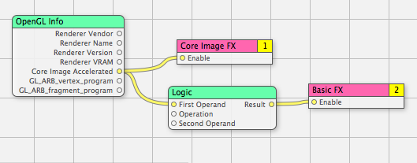

Q: How can I optimize a Quartz Composer composition depending on the hardware it runs on?A: Quartz Composer performances depends a lot on the video card it is running on, and when using a Quartz Composer composition on a various range of machines, it will end up running on more or less powerful video cards. It is fortunately possible to design compositions that adapt to this: Quartz Composer has this convenient "OpenGL Info" patch which returns various information about the OpenGL environment and therefor about the video card. OpenGL Info can check for the type of the video card, its amount of VRAM and if it is able to run Core Image in hardware mode. By combining these informations with Logic and Conditional patches, whose outputs are connected to the "Enable" inputs of various consumer patches of the composition (consumer patches are the red ones in the workspace), one can dynamically enable / disable parts of the composition depending on the hardware capabilities. In the following example, this fake composition uses a high-quality Core Image based visual effect on video cards that are able to run Core Image in hardware, and a simplified visual effect for others, ensuring a smooth frame rate in any case (the "Operation" of the Logic patch is set to "NOT"): Figure 1: An example composition that adapts to the avaibility of Core Image acceleration.  Note: Advanced OpenGL developers can also use the OpenGL Info patch to check for the support of specific OpenGL extensions, like GL_ARB_fragment_program. The extensions checking is configured through the Settings pane of the Inspector. Document Revision History| Date | Notes |
|---|
| 2005-06-01 | Explains how to design compositions that adapt to the hardware limitations. |
Posted: 2005-06-01
|